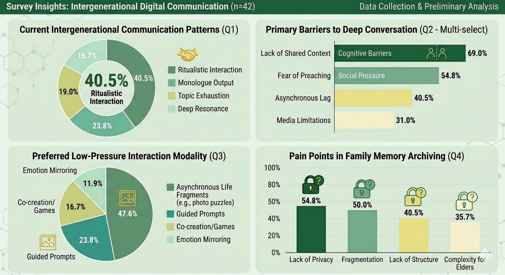

Thoughtful conversation prompts
01
Motivation & Research
This section explains why we chose the intergenerational relationship track and what gaps we found in academic research and existing family communication products.
Designing connection, not just communication efficiency
Our group chose Relation between Generations because we wanted to address a human-centered problem that is both common and emotionally meaningful: the weakening of communication across generations. We are especially interested in this topic because many parent-child and grandparent-grandchild relationships are not defined by open conflict, but by a quieter problem. Conversations often remain superficial, stop easily, or fail to build real mutual understanding. In many families, people care deeply about one another, yet they lack shared topics, low-pressure ways to communicate, and opportunities to understand each other's everyday lives.
We chose this track because it allows us to design for connection rather than only efficiency. Compared with general communication tools, this topic gives us a chance to explore how playful and lightweight interactions can support empathy, curiosity, and long-term closeness across age groups. We are also interested in the challenge of creating a mobile-first experience that remains accessible to both younger and older users in hybrid family contexts.
The Gap
Four academic papers & four commercial products
Each source is reviewed in its own card. We summarise what it did well and what it still missed for our intergenerational relationship context.
Technologies for fostering intergenerational connectivity and relationships: Scoping review and emergent concepts
Reis et al.
Academic Paper · Technology landscape review
✅ Did Well
- Mapped the main technology directions in intergenerational digital support.
- Showed that storytelling, asynchronous exchange, and shared activities can all strengthen connection.
- Provided a broad research foundation for thinking beyond one single communication tool.
❌ Missed
- Stayed at a review level and offered less guidance for a concrete everyday product flow.
- Did not unify topic initiation, life exchange, and memory building into one interaction model.
- Offered limited insight into lightweight, repeated family use over time.
Designing Intergenerational Mobile Storytelling
Druin et al.
Academic Paper · Intergenerational mobile storytelling
✅ Did Well
- Used participatory design to ground the system in real user perspectives.
- Highlighted storytelling as a strong emotional bridge across generations.
- Emphasised co-creation and empathy rather than one-way content delivery.
❌ Missed
- Focused more on story creation than on quick, low-pressure everyday contact.
- Offered less support for casual conversation starters before a deeper story is formed.
- Did not fully connect storytelling to a longer-term family ritual or memory archive.
Promoting intergenerational communication through location-based asynchronous video communication
Bentley et al.
Academic Paper · Asynchronous family video communication
✅ Did Well
- Tested the concept with real participants through field evaluation.
- Showed that asynchronous video reduces scheduling pressure for family connection.
- Supported richer emotional presence than short text messages alone.
❌ Missed
- Focused mainly on sharing clips rather than encouraging reflective dialogue.
- Risked becoming one-way media exchange instead of balanced co-creation.
- Did not strongly structure shared memories after the interaction happened.
Designing Collaborative Technology for Intergenerational Social Play over Distance
Yuan et al.
Academic Paper · Collaborative parent-child play
✅ Did Well
- Used design probes across many families to study real interaction preferences.
- Demonstrated that collaborative play can trigger higher-quality conversation.
- Explained how remote co-play creates motivation and emotional closeness.
❌ Missed
- Focused on play moments more than the broader ecosystem of family communication.
- Gave less attention to the accessibility needs of older adults such as grandparents.
- Did not integrate playful interaction with long-term memory preservation.
Marco Polo
Commercial Product · Asynchronous video messaging
✅ Did Well
- Lowered the timing barrier by making family contact asynchronous.
- Created a warmer sense of presence than basic chat tools.
- Worked well for fragmented schedules when family members cannot reply at once.
❌ Missed
- Acts mainly as a communication channel rather than a guided understanding tool.
- Provides limited scaffolding for playful prompts or reflective questions.
- Does not strongly turn exchanges into structured shared memories.
FamilyAlbum
Commercial Product · Family photo and video archive
✅ Did Well
- Made family media safe, easy to organise, and easy to revisit.
- Supported memory sharing across multiple family members.
- Proved that digital family memory preservation has strong long-term value.
❌ Missed
- Functions more like a repository than an active conversation catalyst.
- Offers limited emotional guidance or playful interaction during sharing.
- Does not actively help two generations compare perspectives or experiences.
StoryCorps
Commercial Product · Guided questions and archived stories
✅ Did Well
- Uses guided prompts to structure meaningful conversation.
- Supports recording and archiving so stories can be preserved over time.
- Transforms spoken memories into valuable long-term family artifacts.
❌ Missed
- Feels closer to a formal interview tool than a lightweight everyday companion.
- Can be high-effort for users who only want to start with small, casual interactions.
- Offers less playful reciprocity during ongoing family exchange.
Caribu
Commercial Product · Video call with shared activities
✅ Did Well
- Combines video communication with shared reading, drawing, and games.
- Creates a stronger sense of remote companionship through doing something together.
- Shows how playful joint activity can make connection feel more natural.
❌ Missed
- Focuses mainly on synchronous sessions, which can be hard for fragmented schedules.
- Provides less support for small asynchronous touchpoints between shared sessions.
- Does not strongly preserve those moments as an evolving family memory system.
Our opportunity is to design a gentle, playful bridge that makes starting a
conversation easier and makes family memories easier to grow over time.
Primary and secondary users
The personas below represent two sides of the same intergenerational relationship: a young adult who wants communication to feel more natural, and an older family member who wants to participate but may feel uncertain with digital tools.


02
User Requirements
This section will connect user pain points to design requirements and show evidence from interviews or observations.
Survey insights from 42 participants
Before translating our findings into requirements, we reviewed questionnaire data to understand current communication patterns, recurring barriers, preferred low-pressure interactions, and concerns around shared family memory archiving.

The survey suggests that many family conversations remain routine and struggle to move into deeper exchange, especially when participants lack shared context or worry about sounding intrusive.
- Low-pressure interaction matters: asynchronous life fragments and guided prompts appear more approachable than high-effort conversation formats.
- Memory tools need care: privacy, fragmented content, and complexity for older users should be considered in the final design direction.
Current communication journey
The following journey map captures how intergenerational conversations often begin with care, but break down because of awkward openings, mismatched communication styles, and the lack of a shared playful bridge.

Interview and observation evidence
These field photos document our group interviews, contextual observations, and collaborative research process while exploring intergenerational communication patterns.
03
Ideation & Alternatives
This section records how the group explored different playful interaction ideas, compared alternatives, and selected the most promising direction.
Rapid UI sketches
Upload photos of eight hand-drawn interface ideas here. Each sketch should show a different way to create intergenerational play or conversation.
Comparing possible system directions
| Alternative | Strength | Limitation | Decision |
|---|---|---|---|
| Prompt-based conversation cards | Easy to start and suitable for short daily use. | May become repetitive without memory building. | Keep as an entry point. |
| Shared memory album | Good for long-term emotional value and reflection. | Needs enough interaction before it becomes meaningful. | Use as a growing archive. |
| Mini collaborative activities | More playful and engaging for both generations. | Must stay simple for older users and busy young users. | Combine selectively with prompts. |
Low-Fi Prototype
Replace this placeholder with the clickable Figma prototype URL.
Figma Link TBD
04
Technical Implementation
This section explains how the product prototype is structured and demonstrates the three core features through interactive screen walkthroughs.
Hosted product link
This live H5 web prototype is deployed on Vercel. It demonstrates the main product flow of our intergenerational communication system, including Topic Bridge, Mood Board, and Family Journal.
How the product system works
The product is implemented as a mobile-first Vue 3 web application built with Vite. Vue Router manages navigation between feature pages, while Axios connects the frontend with REST API endpoints for authentication, topics, mood check-ins, weekly mood summaries, reports, and admin-managed content.
01
User Access
Users open the H5 product through the hosted Vercel link and log in or register.
→
02
Vue Frontend
Feature pages are organised through Vue views, reusable components, and routing.
→
03
Axios API Layer
Frontend actions request topics, mood data, reports, and account operations.
→
04
Family Interaction Data
Conversation, emotion, and journal data return to form a continuous family experience.
Vue 3
Vite
Vue Router
Axios
REST API
Vercel Deployment
Manual screen walkthroughs for the three core features
Each feature is presented as a phone-based walkthrough. Use the Previous and Next buttons to move through the screens manually.

01
Topic Bridge
Prototype opening
The walkthrough begins with the shared opening screen before moving into the Topic Bridge interaction flow.
02
Emotion Sharing / Mood Board
Prototype opening
The walkthrough begins with the shared opening screen before moving into the Mood Board emotional check-in flow.
03
Shared Family Journal
Prototype opening
The walkthrough begins with the shared opening screen before moving into the Family Journal summary view.
From interface to interaction data
Frontend Structure
The product uses Vue views, reusable components, layouts, and global styles to organise a mobile-first H5 interface.
API Communication
Axios modules connect the frontend to user and admin API routes, including login, topics, mood check-ins, weekly mood data, reports, and content management.
Authentication
After login, the returned token is stored locally and attached to later requests through the Authorization Bearer header.
Group member responsibilities
| Member | Main Contribution | Evidence to Add |
|---|---|---|
| Member 1 | Research, requirements, and portfolio content writing. | Research notes / interview evidence. |
| Member 2 | UI design, visual assets, and high-fi screen preparation. | Prototype screenshots / visual assets. |
| Member 3 | Frontend implementation, routing, API integration, and interaction logic. | Feature screenshots / implementation records. |
| Member 4 | User testing, evaluation, demo preparation, and refinement documentation. | Testing notes / before-after evidence. |
05
Evaluation & Reflection
This section will show usability testing with real users, design refinements based on feedback, and final reflection on ethics, accessibility, and AI use.
Before and after screenshots
Before screenshot
After screenshot
Social and ethical implications
Discuss how the design respects different digital abilities, avoids forcing emotional disclosure, supports accessibility, and treats family memories as sensitive personal content.
AI use and verification
If AI-assisted coding is used, document the main prompts, how the generated code was checked against user requirements, and any ethical considerations such as accessibility, bias, and transparency.
Research, products, and AI tools
Add complete references for academic papers, commercial products, images, and any AI tools used for coding, writing support, visual assets, or video production.